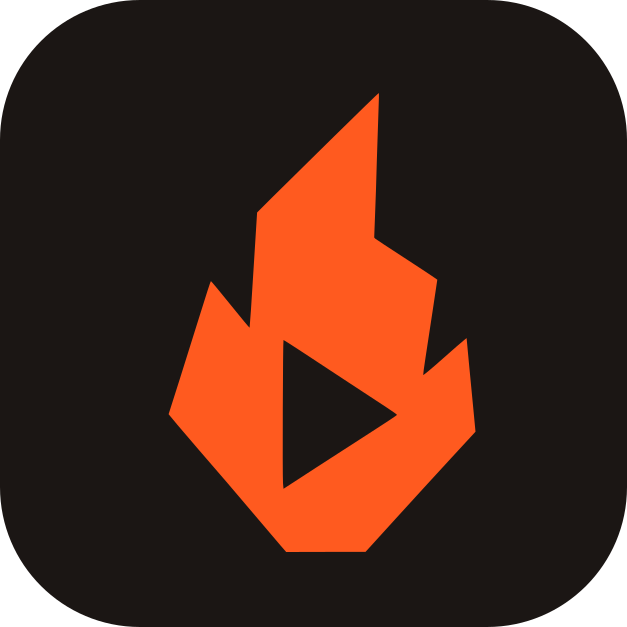

🎓 Tutorial
🧭 Automático / Otra
🎮 Streaming / Gaming / IRL
🎓 Educativo / Tutorial
😂 Comedia / Sketch
✨ Motivación / Storytelling
🗣 Opinión / Debate / Noticias
😲 Reacción / Random-chat (OmeTV, pranks)
🎯 5 — curado
⚖️ 10 — equilibrado
📦 20 — todo lo que haya
🎬 Sin cortes internos
✂️ Edición balanceada
⚡ Ritmo acelerado
Aplicar a todos
Aplicar a todos
🎧 Rápido — solo audio
⚡ Medio — audio + imagen liviano
🎬 Completo — audio + imagen a fondo
Analizar
Re-analizar
Opcional — si lo dejás vacío, la IA busca los mejores momentos sola. Probá con alguna de estas:
😂 Risas fuertes
🔥 Tensión / discusión
💬 Frases picantes
😮 Sorpresa / shock
📁 Subir video
⬇ Descargar
⬇ Descargar todos los finalizados (
0
)
👆 Modo Descarte
uno por uno, elegís sí/no
🎬 Modo Multicámara
todos los clips juntos
Elegí un video y apretá Analizar. La categoría y el pedido a la IA son opcionales.